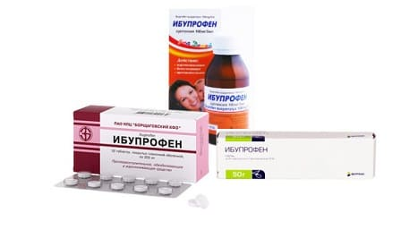

Практически у каждого ребенка хотя бы однажды болело ухо, особенно в младенчестве или в дошкольный период. К сожалению, боль в ухе обычно начинается в самое неподходящее время — посреди ночи или в поездке. Ниже мы приводим некоторые причины воспаления уха и методы, помогающие уменьшить боль.
ПРИЧИНЫ
Воспалиться могут две области в ухе.
• Боль при среднем отите. Жидкость, накапливающаяся в среднем ухе при инфекции или аллергии, оказывает давление на барабанную перепонку. Кроме того, та же слизь, которая течет из носа, забивает евстахиеву трубу — тоненькую трубочку, соединяющую среднее ухо с носоглоткой, благодаря которой давление с обеих сторон барабанной перепонки остается одинаковым. Если евстахиева труба забита слизью (при аллергии или насморке) или сдавлена при изменении высоты полета на самолете, результатом становится боль в среднем ухе.
• Боль в наружном слуховом проходе.
Причиной боли может быть воспаление наружного слухового прохода или инфицирование его при «ухе пловца».
ЛЕЧЕНИЕ ЛЮБОЙ БОЛИ В УШАХ
Если вы не уверены, что именно вызвало боль, но необходимо уменьшить ее до тех пор, пока вы не попадете к врачу, попробуйте такие средства:
Используйте силу тяжести. Предложите ребенку отдыхать или спать на боку, больным ухом вверх. Это позволит жидкости, скопившейся в среднем ухе, оттекать от барабанной перепонки, уменьшая давление на нее.
Очистите нос. Поскольку евстахиевы трубы соединяют заднюю часть носоглотки с ушами, то, если нос забит, скорее всего, то же происходит и с евстахиевыми трубами. Таким образом, чтобы уши не закладывались и не
болели, надо устранять заложенность носа.
Стряхните боль. Открытие забитой евстахиевой трубы часто облегчают боль в ухе. Возьмитесь за мочку уха большим и указательным пальцем и четыре раза оттяните ее. Этот маневр открывает часть наружного слухового прохода, прилегающую к евстахиевой трубе, и может помочь держать ее открытой.
Сдуйте боль. Если вы считаете, что боль в ушах появилась из-за забитой евстахиевой трубы (как при аллергии, насморке или в самолете), предайте ему надуть воздушный шарик. Это часто способствует открытию евстахиевой трубы и уменьшает боль, как и зевота и попытка выдохнуть воздух с зажатым носом и закрытым ртом у взрослых.
Попробуйте ушные капли. За эти годы мы слышали множество одобренных мамами средств от боли в ухе, таких, как чесночное масло, оливковое масло, масло алоэ вера. Хотя лучше, чтобы врач осмотрел ребенка до того, как вы воспользуетесь ушными каплями, но, если боль в ухе началась среди ночи, будет неплохо закапать в ухо одно из этих масел, предварительно подогрев его, даже если вы не знаете причины боли. Вот как это сделать:
• уложите ребенка больным ухом верх;
• закапайте четыре капли теплого (не горячего!) масла в наружный слуховой проход. Масло должно легко стекать с кончика вашего пальца. Чтобы масло достигло больного места, мягко оттяните мочку назад, помогая маслу стечь внутри канала и успокоить воспаленную барабанную перепонку.
ПОДСКАЗКА ДОКТОРОВ СИРС № 1 ПРИ БОЛИ: НОЧНАЯ БОЛЬ - ПОСЕТИТЕ ВРАЧА Общепринято, что любая боль, от которой ребенок просыпается, требует большего внимания врача и вряд ли связана с психологическими причинами в отличие от той, которая случается только днем. |
Ваш врач может выписать ушные капли с анестетиком и посоветовать безрецептурные противоболевые средства, такие как ацетаминофен и ибупрофен.

Здоровье ребенка от докторов Сирс / Сирс У. и др.